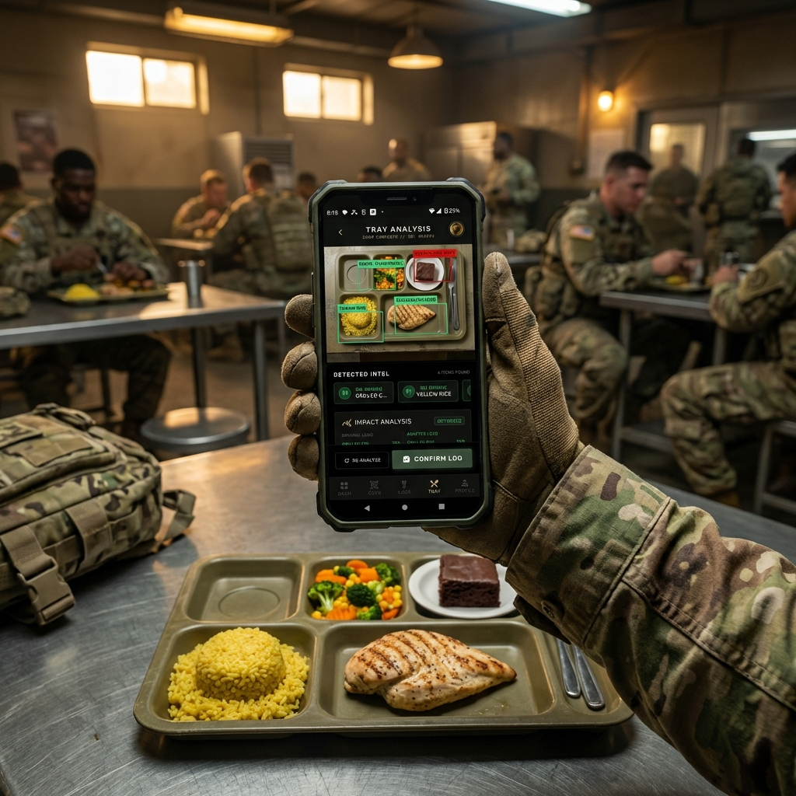
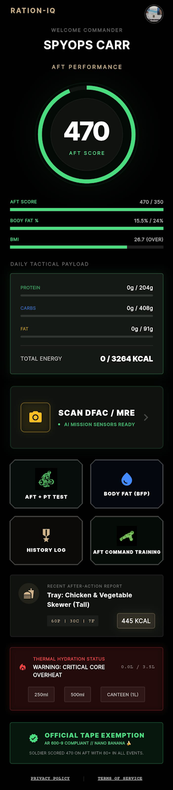

RATION-IQ is a next-generation nutrition and readiness platform built for people who operate under standards, military personnel, first responders, and serious fitness professionals.
At its core is an advanced AI TACTICAL SYSTEM that turns food into actionable intelligence, helping you fuel correctly, train smarter, and stay ready before performance is tested.
SEE YOUR FUEL. KNOW YOUR READINESS.
Take one photo of your meal: A DFAC tray, plate, or field ration. RATION-IQ instantly delivers:
- Caloric breakdown.
- Macro and micro (vitamins / mineral) nutrient analysis.
- Readiness-aligned fuel feedback.
No manual logging. No guesswork. No estimates. Just clarity.
BUILT FOR READINESS, NOT AFTER-ACTION REPORTS
Most fitness apps are reactive. They tell you how you did after the test is over. RATION-IQ is predictive. It helps you make the right decisions days before test day, optimizing food choices instantly, recovery, and body composition so performance outcomes are never a surprise.
TACTICAL ADVANTAGE: REAL-TIME FOOD INTELLIGENCE
Sergeant Miller scans his tray with his phone RATION-IQ app. Within seconds, it breaks the meal down into clear, actionable data. A visual alert flags excess sugar and empty calories.

RATION-IQ visual overlay instantly classifies the meal:
- Green: Lean protein and complex carbohydrates. PROCEED.
- Yellow: Elevated sodium. Proceed with CAUTION.
- Red: High sugar. AVOID.
DESIGNED FOR THE 2026 AFT STANDARDS
With updated Army Fitness Test combat standards effective January 1, 2026, RATION-IQ introduces Performance Path Intelligence. Soldiers scoring 465+ total and >80 points in every single event on the AFT are exempt from the body fat tape test.
- Target 465+ scores
- Optimize fuel intake
- Reduce uncertainty
- Skip tape when eligible
READY BEFORE IT COUNTS
RATION-IQ helps you show up ready - not hopeful. Fuel smarter. Train with confidence. Meet standards before you are tested.